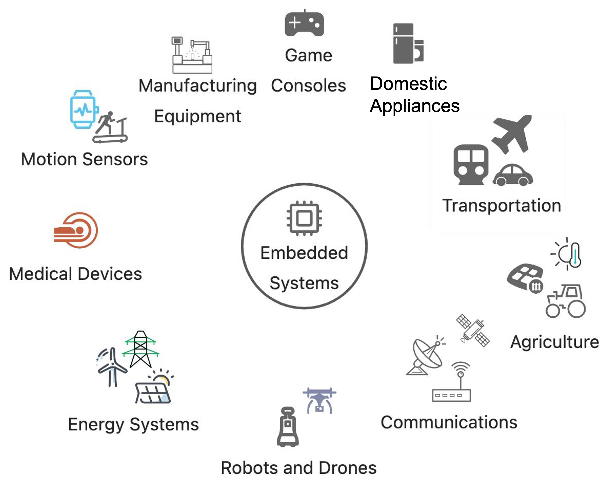

4.1 Understanding TinyML and Edge Impulse Studio
This section will explain embedded machine learning, the differences between TinyML and other artificial intelligence, and some essential applications. This section will help you understand what TinyML is and why we need it. Edge Impulse Studio is one of the tools that allows developers to create next-generation intelligent device solutions through embedded machine learning. This section will introduce you to this tool and help you understand the basic steps to build an embedded machine-learning model.
4.1.1 Common Terms
In addition to TinyML, we often hear conceptually similar terms such as edge computing, edge AI, embedded machine learning, etc. So, before learning TinyML, you need to understand these terms and their meanings.
4.1.1.1 Embedded Systems
An embedded system is a computer used only to solve a few particular problems and is challenging to change. The term “embedded” means that it is built into the system. It is a permanent part of the more extensive system. It usually doesn’t look like a computer; in most cases, it doesn’t have a keyboard, monitor, or mouse. But like any computer, it has a processor, software, input, and output.
Embedded systems are computers controlling various physical and electronic devices, and now they are almost everywhere. From the Bluetooth headphones you use, home audio-visual equipment, game consoles, air conditioners, sweeping robots, rice cookers, and washing machines to the control units of electric vehicles to communication equipment, factory equipment, medical equipment, office places, and even military equipment, almost any electrically driven device has the presence of embedded systems. Embedded software is the software running on them, and the following figures show some scenes where you can see embedded systems.

Embedded systems can be large or small, as small as the microcontroller controlling the digital watch and as large as the embedded computer in the autonomous car. Unlike general-purpose computers such as laptops or smartphones, embedded systems usually perform a specific specialized task.
🔍 Do some research:
Look around you, what devices might have embedded systems in them?
The size and complexity of embedded systems vary, but they all contain three basic components:
- Hardware: These systems use microprocessors and microcontrollers as their hardware. Microprocessors are similar to microcontrollers because they are both related to CPUs (central processing units), and CPUs are combined with other essential computer parts (such as storage chips and digital signal processors (DSPs)). Microcontrollers integrate all these parts into a single chip.
- Firmware and Software: The complexity of the system software differs from industrial-grade microcontrollers and embedded IoT systems, on the other hand, they usually run relatively basic software, using very little memory.
- Real-Time Operating System (RTOS): These systems, especially the more minor, often do not include these operation systems. By supervising software during program execution and establishing standards, RTOS determines how the system operates.
Embedded systems are often also constrained by their deployment environment. For example, many embedded systems need to run on battery power. Hence, their design needs to consider energy efficiency metrics - perhaps memory is limited, or the clock speed is extremely slow.
The challenge for engineers programming for embedded systems is often implementing functional requirements within these limited hardware and environmental resource constraints. You must consider hardware resource constraints when learning to build your TinyML project model for XIAO later.
4.1.1.2 Edge Computing and Internet of Things (IoT)
The concept of “Edge” is relative to the “Center.” In the early days, computers like the ENIAC (Electronic Numerical Integrator and Computer), built in 1945, were massive, weighing nearly 30 tons and occupying 170 square meters.

Staff programming the ENIAC
At this stage, computational tasks were centralized on the core machine. These large computers evolved into “minicomputers,” typically consisting of a central host and multiple terminals connected to the host. Multiple users could issue computational instructions through the terminals, but most of the computation still occurred on the central host. As time passed, the terminals became more complex and took over more and more functions of the central computer.

The processor manual cover for the minicomputer pdp11/70,
showing the host and connected terminals.
It wasn’t until the advent of personal computers that computation truly expanded to the “edge.” The rapid development of personal computers also led to the decline of those massive machines, and the scale of human computation quickly tilted towards the “edge.”

The 70s Wang computer, once a world leader in market share. (Personal computer Wang 2200 PCS II. It is located in the Belgrade Museum of Technology.)
The emergence and development of the Internet led to a large concentration of servers to provide a variety of data storage and computational services, search engines, streaming video, online games, social networks, etc. The highly centralized cloud computing era had arrived, and many internet service providers owned massive data center rooms.

Google’s data center located on the outskirts of Pryor, Oklahoma, USA
In theory, all our computing services can be completed in the cloud. But these cloud-based services are useless in many areas without internet connections or when the internet goes down.
The computers we use for work and entertainment are just some devices connected to these cloud services. As of 2021, there were as many as 12.2 billion connected devices worldwide, and we call this network of devices IoT (Internet of Things). It includes everything you can and can’t think of, such as mobile phones, smart speakers, connected security cameras, cars, containers, pet trackers, industrial sensors, etc.
These devices are embedded systems containing microprocessors running software written by embedded software engineers. We can also call them edge devices because they are located at the edge of the network. Computation performed on edge devices is known as Edge Computing. The following illustration expresses the relationship between the cloud and edge devices.

Devices at the network edge can communicate with the cloud, edge infrastructure, and each other. Edge applications typically span multiple locations on this map. For example, data may be sent from an IoT device equipped with sensors to a local edge server for processing.
4.1.1.3 Artificial Intelligence (AI)
Artificial Intelligence (AI) is a vast concept and is difficult to define. In a vague sense, it’s about making things possess human-like intelligence and thinking abilities. But even the definition of intelligence itself is disputed, and this is a cutting-edge field with many unknowns, which readers are welcome to explore on their own. For the convenience of understanding the following concepts, this book provides a relatively narrow definition of AI: an artificial system capable of making wise decisions based on specific inputs.
4.1.1.4 Machine Learning (ML)
Machine Learning (ML) primarily aims to design and analyze algorithms that allow computers to “learn” automatically. ML algorithms are a class of algorithms that automatically analyze and learn patterns from data and use these patterns to predict unknown data.
Take a typical example of machine learning—continuous motion recognition. In Section 2.4, we learned about the triaxial accelerometer. The image below shows a Wio Terminal with an embedded triaxial accelerometer and screen. We can use it to record accelerometer data for several different movements: waving (wave), flipping (flip), and idling (idle).

Looking at the data generated from these different movements, you can find a method for the machine to recognize these motion patterns. The traditional way involves manually analyzing and checking the data, identifying specific logical rules for different movements through mathematical analysis, and then writing a recognition program to perform the desired action based on these rules. Sounds complicated, doesn’t it?
Fortunately, we now have machine learning methods. Training and testing these data will yield an algorithm, and the device only needs to run this algorithm to automatically complete our desired “inference” process and deliver results. From the current state of machine learning development, this method is exceptionally proficient in handling complex data scenarios. We will learn more about this process in subsequent sections.
4.1.1.5 Edge AI
As the term suggests, Edge AI combines edge devices and artificial intelligence. The development of Edge AI stems from the pursuit of lower system power consumption and higher efficiency. For example, popular smartwatches or fitness bands often have built-in accelerometers that generate hundreds of readings per second—a large volume of data—and continuous data reading is required to recognize movement states. If the recognition of movements is performed in the cloud, the smartwatch would need to consume a lot of energy to send data to the cloud, and there would usually be a delay in receiving the result. This makes the entire computational process uneconomical—high energy consumption and latency. This latency can also prevent us from effectively using data for real-time feedback.
Edge AI solves this problem by recognizing movements on the smartwatch or band itself. This allows for quick results without relying on the cloud. If necessary data needs to be uploaded to the cloud, there’s no need to send a large amount of sensor data; instead, just the essential motion recognition results are sent, significantly reducing communication volume and consuming less electric power.
4.1.1.6 Embedded Machine Learning
Embedded Machine Learning is the art and science of running machine learning models on embedded systems. When we talk about embedded machine learning, we typically refer to machine learning inference—the process of taking input and making a prediction (for example, guessing motion status based on accelerometer data). The training part is typically still performed on traditional computers.
Furthermore, embedded systems usually have limited memory. This challenges running many machine learning models, which often have high demands for read-only memory (storing the model) and RAM (handling intermediate results generated during inference). They often need more computing capability as well. Many machine learning models are quite compute-intensive, which can also pose problems.
4.1.1.7 Tiny Machine Learning (TinyML)
TinyML involves implementing the inference process of machine learning on the most restricted embedded hardware, such as Micro Processor Units (MCUs), Digital Signal Processors (DSPs), and Field Programmable Gate Arrays (FPGAs).
The image below helps to understand the relationship between these terms better.

4.1.2 Advantages and Operation of Edge AI
For many years, the Internet of Things (IoT) has been referred to as “machine-to-machine” (M2M). It involves connecting sensors and various computing devices for process automation control and has been widely adopted in industrial machinery and processes.
Machine learning offers the ability to make further progress in automation by introducing models that can make predictions or decisions without human intervention. Due to the complexity of many machine learning algorithms, the traditional integration of IoT and ML involves sending raw sensor data to a central server, which performs the necessary inference computations to generate predictions.

This configuration might be acceptable for low volumes of raw data and complex models. However, several potential problems have emerged:
- Transmitting extensive sensor data (like images) can consume a lot of network bandwidth.
- Data transmission also requires power.
- Sensors must continuously connect to the server to provide near real-time machine learning computation.
Given these challenges and the rapid development of machine learning, Edge AI has begun to emerge. Jeff Bier, founder of Edge AI and Vision Alliance, outlined five factors that push artificial intelligence to the edge in his article What’s Driving AI and Vision to the Edge —BLERP, which stands for Bandwidth, Latency, Economics, Reliability, and Privacy.
- Bandwidth: If you have a commercial greenhouse, workshop, or mall with hundreds of cameras, it’s impossible to send this information to the cloud for processing—the data would choke any type of internet connection you have. You simply need to process it locally.
- Latency: The latency here refers to the time between the system receiving sensor input and making a response. Consider autonomous vehicles: if a pedestrian suddenly appears at a crosswalk, the car’s computer might only have a few hundred milliseconds to decide. There’s not enough time to send the image to the cloud and await a response.
- Economics: Cloud computing and communication are getting better and cheaper, but they still cost money—possibly a lot of money, especially regarding video data. Edge computing reduces the amount of data that must be sent to the cloud and the computation workload once it arrives, significantly reducing costs.
- Reliability: Think of a home security system with facial recognition—even if there’s an internet outage, you still want it to allow your family members to enter. Local processing makes this possible and gives the system more robust fault tolerance.
- Privacy: The rapid development of edge audio and video sensors has caused severe privacy issues, and sending this information to the cloud dramatically increases these concerns. The more information that can be processed locally, the less potential for abuse—what happens on the edge stays on the edge.
In most cases, training a machine learning model involves a three-step process of Model ➡️ Training ➡️ Inference, where obtaining the model requires more intensive computation than executing inference.
- Model: A mathematical formula trying to generalize information from a given dataset.
- Training: The process of automatically updating the parameters from data within a model. This model “learns” to make conclusions and generalize about the data.
- Inference: Providing new, unseen data to a trained model to make predictions, decisions, or classifications.
Thus, under normal circumstances, we would rely on powerful server clusters to train new models, constructing datasets from raw data collected on-site (images, sensor data, etc.) and using this dataset to train our machine learning models.
⚠️ Note:
In some cases, we can train on the device side. However, this is generally unfeasible due to the memory and processing limitations of such edge devices.
Once we have a trained model, which is just a mathematical model (in the form of a software library), we can deploy it to our intelligent sensors or other edge devices. We can use this model to write firmware or software to collect new raw sensor readings, perform inferences, and take actions based on these inference results, as shown in the figure below. These actions could be self-driving cars, moving robotic arms, or sending notifications to users about engine failures. Since inference is performed locally on the edge device, the device does not need to maintain a network connection (the optional connection is shown as a dotted line in the chart).

4.1.3 Applications of Edge AI
Running machine learning models on edge devices without staying connected to a more powerful computer opens up possibilities for various automated tools and more intelligent IoT systems. Here are a few examples of edge AI enabling innovation in multiple industries.

Benjamin Cabé used TinyML technology to create an artificial nose that
distinguishes between various distinct smells.
Environmental Protection
Smart grid monitoring to detect faults in power lines early
Wildlife tracking and behavior research
Forest fire detection and early warning
Agriculture
Precision weeding, fertilization, pesticide application, or irrigation
Automatic recognition of irrigation needs
Automatic recognition of crop status and disease/insect infestation conditions
Smart Buildings
Monitoring of intrusions and recognition of abnormal states
Air conditioning systems that adapt based on the number of people in a room
Health and Sports
Wearable devices that track sleep and exercise conditions
Portable medical devices
Gesture recognition
Human-Machine Interaction
Voice activation word detection
Gesture and device motion recognition for auxiliary control
Industry
Automatic safety helmet detection
Machine, equipment, and facility condition monitoring
Production line defect detection
Position and motion state detection
The computational power typically required to perform machine learning inference at the edge is often more significant than simply polling sensors and transmitting raw data. However, locally, achieving such computations requires less power than sending raw data to a remote server.
The following table provides some suggestions on the type of hardware needed to perform machine learning inference at the edge, depending on the required application.
[Source: https://docs.edgeimpulse.com/docs/concepts/what-is-edge-machine-learning]
| XIAO for this kind of task | ||||||
|---|---|---|---|---|---|---|
| Low-End MCU | High-End MCU | NPU (Neural Network Processor) |
MPU (Microprocessor) | GPU (Graphics Processor) | ||
| Task | Sensor Fusion Classification | Audio Classification | Image Classification | Complex Images or Sound and simple Videos | Video Classification | |
| Memory | 18KB | 50KB | 256KB | 1MB+ | 1GB+ | |
| Sensors | ✅ | ✅ | ✅ | ✅ | ✅ | |
| Audio | ✅ | ✅ | ✅ | ✅ | ||
| Images | ✅ | ✅ | ✅ | |||
| Videos | ✅ | ✅ | ||||
| XIAO | nRF52840 Sense | nRF52840 & ESP32S3 Sense | ESP32S3 Sense | ESP32S3 Sense | —————– |
Embedded hardware is also rapidly evolving, and it’s expected that the contents of this table will change soon.
4.1.4 Introduction to Edge Impulse Studio
Edge Impulse was founded by Zach Shelby and Jan Jongboom in 2019. It is the leading edge device machine learning development platform. This platform allows developers to create and optimize solutions with real-world data, making the process of building, deploying, and scaling embedded ML applications more accessible and faster than ever before.

Logo of Edge Impulse.
You can visit Edge Impulse’s official website for more information about this tool and check the official documentation for a basic explanation.
In the following sections, we will learn to achieve continuous motion recognition with the on-board 6-axis accelerometer of the XIAO nRF52840 Sense shown below and voice keyword wake-up functionality using the on-board PDM microphone.

Seeed Studio XIAO nRF52840 Sense
Computer Vision applications such as Image Classification and Object Detection will also be implemented using the camera of the XIAO ESP32S3 Sense shown below.

Seeed Studio XIAO ESP32S3 Sense